About Newshaper
Newshaper is a tabletop interactive system which deals with re-contextualization of daily news items gathered from live news feeds. It allows users to create their own relational networks and 'emotional maps' based on actual live news streamed from internet. Due to the dynamic nature of live data streams system constantly creates different content for users and due to manipulations done by the users it generates different visual results of the same content. In a more general sense, users of Newshaper system shape their own perception about the daily news and share their vision with other users. System allows them to save their designed structure.
Most of the time, mass media sources deliver the daily news in a context. This context creates a meta-meaning that usually effects the simple meaning of the news. By tagging, by categorizing, by geo-locating, by making it popular or unpopular mass media is shaping the perception of the daily news items in a different perspective. Newshaper allows their users to break this pre-defined structures which have been delivered by the source. After users shape their own news scape, system also allows to see the comparison between pre-defined structure and user defined structure in a visual way.
By using Newshaper users might define their feelings about news and importance of each item. The users can save their mood and the news map they created as a proof of that particular moment. Average of all sessions recorded by users creates the overall mood of the day in order to display the common thoughts and feelings about the actual news provided by media sources.
Exhibitions, Presentations
September 2009, Linz, Exhibited at Ars Electronica 2009.
March-August 2009, Istanbul, Exhibited at Uncharted in SantralIstanbul.
Credits & Thanks:
To contact and feedbacks: hello [at] newshaper [dot] net
Javier Lloret, Graduate Student, Kunstuniversität Linz, Interface Cultures
Mahir Yavuz, PhD Candidate, Kunstuniversität Linz, Interface Cultures
The installation consists a tabletop projection, a camera tracks the shadows on the table to create interactivity and a dynamic database that constantly gathers live news items from internet. The software has three different functions; it automatically streams news items every minute and place them onto the table, it allows users to modify the visual look and organization of the news landscape by using their hands and it gives the opportunity to save the designed structure of any given moment. The software is written in C++ with using OpenFrameworks Libraries. Touchlib libraries are used for finger tracking and the news data is gathered from Associated Press.
Special Thanks to Stefan Mittlböck, Martin Kaltenbrunner, Berkay Daver, Travis Kirton, Jayme Cochrane & the technical crew of SantralIstanbul for their invaluable support and time. Images in Istanbul: Courtesy of Efe Mert Kaya.
Videos
Exhibition Images (Istanbul)


Exhibition Images (Linz)

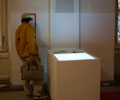


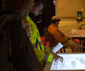

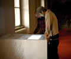

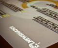

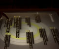

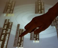

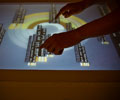


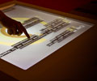

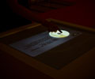

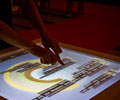

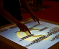

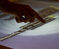


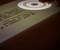


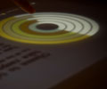


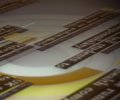